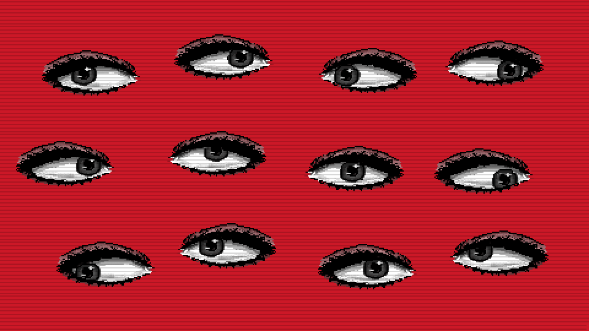

<<<<<<< HEAD =======

Mostrar dica
Jogar novamente
Pegar recompensa
A sequência tem
olhos.
Comece pelos cantos!
>>>>>>> 9b5d59c18681617795e83bb7aa7d019a47de0606
Revele a imagem
Pegar recompensa
<<<<<<< HEAD ======= >>>>>>> 9b5d59c18681617795e83bb7aa7d019a47de0606